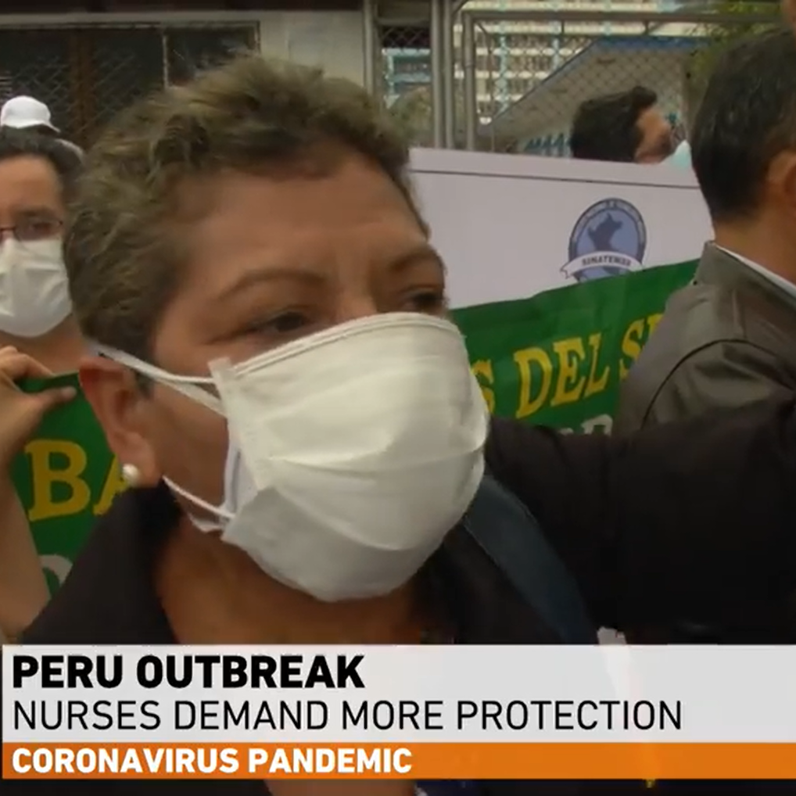
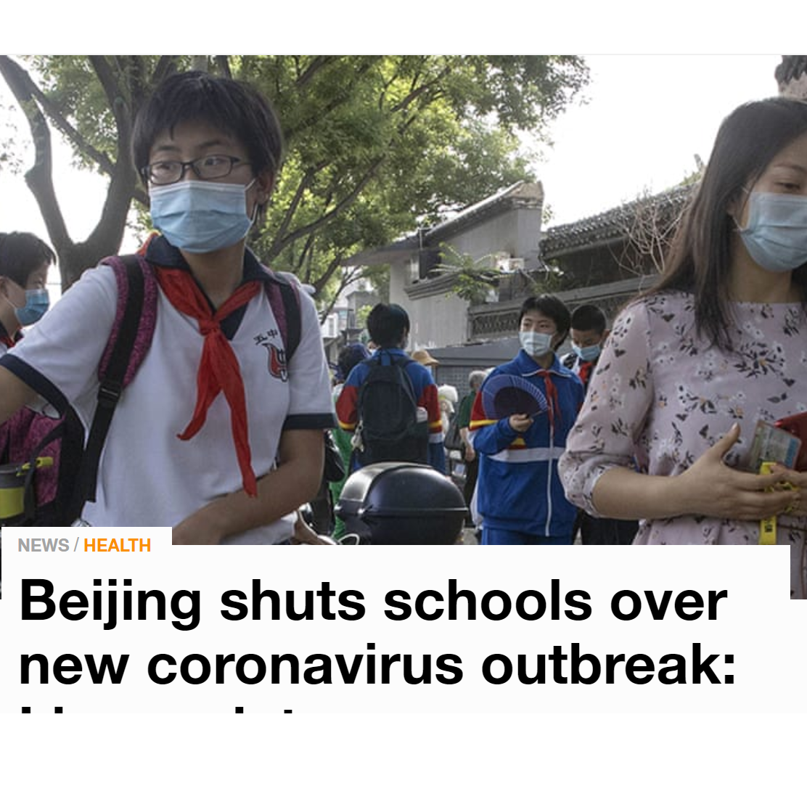
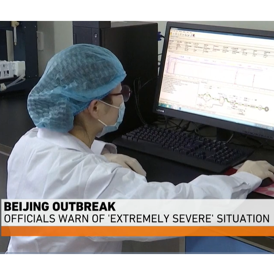

新闻新闻
最近新闻动态


全球疫情最新动态：黎巴嫩恐将失控 缅甸关闭学校

黎巴嫩总理哈桑·迪亚布（Hassan
Diab）表示，该国疫情可能正在失控。迪亚布在最高防务委员会发表的声明中说：“确诊病例数量大大增加，如果继续下去，我们将失去对这一流行病的控制。”
黎巴嫩周二报告了525例新新增Covid-19感染病例和12例死亡病例。在本月初首都发生灾难性爆炸之后，该国的感染人数有所上升。医务人员说，爆炸发生后的两周内，病例数增加了一倍，这是因为感染在正在治疗受害者的医院中传播。

肺炎疫情实时动态 钟南山最新发声谈疫情峰值具体内容 疫情拐点到了吗 湖北以外新增病例14连降
 钟南山表示，湖北以外，全国新增确诊病例总数已经连续13天下降。这个事实可以看得出中央强有力的干预措施起了效果：“现在有没有达到峰值，我们还在看，我们估计差不多了。到了峰值不等于到了拐点，也可能随着劳工（节后）的大流动，会不会再出来一个峰，我个人的估计大概不会。因为现在流动过程中也采取了非常严格的检测措施，隔离措施，不太容易出现一个大高峰（互相传染、聚集性感染）”。
钟南山表示，湖北以外，全国新增确诊病例总数已经连续13天下降。这个事实可以看得出中央强有力的干预措施起了效果：“现在有没有达到峰值，我们还在看，我们估计差不多了。到了峰值不等于到了拐点，也可能随着劳工（节后）的大流动，会不会再出来一个峰，我个人的估计大概不会。因为现在流动过程中也采取了非常严格的检测措施，隔离措施，不太容易出现一个大高峰（互相传染、聚集性感染）”。
疫情追踪|11日新增本土病例9例 均在新疆
8月11日0—24时，31个省（自治区、直辖市）和新疆生产建设兵团报告新增确诊病例25例，其中境外输入病例16例（广东6例，上海4例，内蒙古1例，浙江1例，福建1例，山东1例，四川1例，陕西1例），本土病例9例（均在新疆）；无新增死亡病例；新增疑似病例1例，为境外输入病例（在上海）。
31省区市新增9例确诊 均为境外输入！连续12日本土零新增 国内疫情最新消息8月27日
截至8月27日24时，据31个省(自治区、直辖市)和新疆生产建设兵团报告，现有确诊病例288例(其中重症病例4例)，累计治愈出院病例80091例，累计死亡病例4634例，累计报告确诊病例85013例，现有疑似病例3例。累计追踪到密切接触者814039人，尚在医学观察的密切接触者10040人。
31个省(自治区、直辖市)和新疆生产建设兵团报告新增无症状感染者16例(均为境外输入)；当日转为确诊病例2例(均为境外输入)；当日解除医学观察21例(境外输入18例)；尚在医学观察无症状感染者358例(境外输入313例)。
中国内地新增确诊病例创3月6日来新高 专家称疫情未来大流行可能性不大
 中新社北京7月29日电 28日，中国内地新增确诊病例突破百例，创下自3月6日以来的日增新高，现有确诊病例数则是5月3日以来的最高点。中国疾控中心流行病学前首席科学家曾光29日表示，这意味着中国疫情出现了局部反弹，但在中国防控措施愈加成熟之际，疫情在未来大流行的可能性不大。
中新社北京7月29日电 28日，中国内地新增确诊病例突破百例，创下自3月6日以来的日增新高，现有确诊病例数则是5月3日以来的最高点。中国疾控中心流行病学前首席科学家曾光29日表示，这意味着中国疫情出现了局部反弹，但在中国防控措施愈加成熟之际，疫情在未来大流行的可能性不大。
北京无新增丨8月28日新冠肺炎疫情最新情况通报
 8月28日0—24时，31个省（自治区、直辖市）和新疆生产建设兵团报告新增确诊病例9例，均为境外输入病例（上海3例，福建2例，广东2例，四川2例）；无新增死亡病例；无新增疑似病例。
8月28日0—24时，31个省（自治区、直辖市）和新疆生产建设兵团报告新增确诊病例9例，均为境外输入病例（上海3例，福建2例，广东2例，四川2例）；无新增死亡病例；无新增疑似病例。
8月28日湖北省、荆州市最新疫情通报！
020年8月28日0—24时，全省新增新冠肺炎确诊病例0例，新增疑似病例0例，新增出院病例0例，新增死亡病例0例。
8月28日，全省新增无症状感染者0例，转确诊0例，解除隔离0例，尚在医学观察的无症状感染者0例。
截至2020年8月28日24时，全省现有确诊病例1例(境外输入，普通型)，现有疑似病例0例。累计治愈出院63626例，累计病亡4512例，全省累计报告新冠肺炎确诊病例68139例。全省累计追踪密切接触者285555人，尚在接受医学观察3人。
世卫组织：全球累计新冠确诊病例达24299923例
 新华社日内瓦8月28日电（记者刘曲）世界卫生组织28日公布的最新数据显示，全球新冠累计确诊病例达24299923例。
新华社日内瓦8月28日电（记者刘曲）世界卫生组织28日公布的最新数据显示，全球新冠累计确诊病例达24299923例。
世卫组织网站最新数据显示，截至欧洲中部时间28日16时33分（北京时间22时33分），全球确诊病例较前一日增加281581例，达到24299923例；死亡病例增加6261例，达到827730例。
8月29日新疆疫情通报 该地什么时候解封
 据国家卫建委8月29日通报疫情最新消息，昨日31省和新疆新增9例确诊病例和10例无症状感染病例，皆由境外输入。新疆疫情已经得到彻底控制，该地区从8月16日开始新增确诊清零，截止8月28日无新增确诊。
据国家卫建委8月29日通报疫情最新消息，昨日31省和新疆新增9例确诊病例和10例无症状感染病例，皆由境外输入。新疆疫情已经得到彻底控制，该地区从8月16日开始新增确诊清零，截止8月28日无新增确诊。
疫情舆论
全国政协常委吴昌德：抗击疫情 舆论引导不能缺位
 在抗击新冠肺炎疫情中，有一个重要特点，就是疫情信息传播速度非常快，各种谣言和不良信息夹杂其中，对公众心理情绪影响特别大，因此加强舆论引导工作显得格外重要。
着力提升主流媒体网上传播能力。多样化的社会环境、自媒体的信息时代，“舆论一律”不可能，面对多样化舆论环境下各种不同声音的客观存在，应允许社会不同阶层和人群、不同价值观念和利益诉求合理合法适度表达。简单粗暴的封杀、删帖，往往事与愿违、效果适得其反。应当着力在做大做强主流媒体、提升主流媒体网上传播能力上下功夫，主动回应社会关切，对善意的批评、意见、建议，认真听取并加以改进。同时要守住政治底线，对借机恶意攻击党的领导和社会主义制度的言论，依法依规予以坚决制止。
在抗击新冠肺炎疫情中，有一个重要特点，就是疫情信息传播速度非常快，各种谣言和不良信息夹杂其中，对公众心理情绪影响特别大，因此加强舆论引导工作显得格外重要。
着力提升主流媒体网上传播能力。多样化的社会环境、自媒体的信息时代，“舆论一律”不可能，面对多样化舆论环境下各种不同声音的客观存在，应允许社会不同阶层和人群、不同价值观念和利益诉求合理合法适度表达。简单粗暴的封杀、删帖，往往事与愿违、效果适得其反。应当着力在做大做强主流媒体、提升主流媒体网上传播能力上下功夫，主动回应社会关切，对善意的批评、意见、建议，认真听取并加以改进。同时要守住政治底线，对借机恶意攻击党的领导和社会主义制度的言论，依法依规予以坚决制止。
从新冠肺炎疫情防控宣传看新媒体舆论引领力
庚子鼠年，一场抗击新冠肺炎疫情的人民战争在神州大地打响。伴随着这场全民抗疫斗争，一场没有硝烟的宣传舆论战由此拉开。公众号、抖音、微博等新媒体，在疫情防控宣传舆论引导中发挥反应快、覆盖广、形式活、互动强等优势，展现出很强的辐射力、感染力，深受社会大众的喜爱与欢迎，在此次舆论战“疫”中发挥了重要引领作用，为打赢疫情防控阻击战提供了强大舆论支撑。
网络舆论引导与大学生爱国主义教育研究——基于新冠疫情的思考
 党的十九大提出，必须树立正确的新闻观念，对网络媒体进行引导，在全社会弘扬社会主义核心价值观。新时代加强爱国主义教育离不开舆论的正确引导。疫情防控中做好爱国主义舆论引导，有助于青年大学生激发爱国热情，坚定抗击疫情的信心。《新时代爱国主义教育实施纲要》明确提出：要用好报刊广播影视等大众传媒，营造浓厚氛围，聚焦爱国主义主题，创新方法手段，适应分众化、差异化传播趋势，使爱国主义宣传报道接地气、有生气、聚人气，有情感、有深度、有温度。所以，加强大学生爱国主义教育，要发挥好舆论引导作用，尤其是舆论引导的艺术性。
党的十九大提出，必须树立正确的新闻观念，对网络媒体进行引导，在全社会弘扬社会主义核心价值观。新时代加强爱国主义教育离不开舆论的正确引导。疫情防控中做好爱国主义舆论引导，有助于青年大学生激发爱国热情，坚定抗击疫情的信心。《新时代爱国主义教育实施纲要》明确提出：要用好报刊广播影视等大众传媒，营造浓厚氛围，聚焦爱国主义主题，创新方法手段，适应分众化、差异化传播趋势，使爱国主义宣传报道接地气、有生气、聚人气，有情感、有深度、有温度。所以，加强大学生爱国主义教育，要发挥好舆论引导作用，尤其是舆论引导的艺术性。
在疫情防控的宣传中引领主流舆论
疫情防控是个大考题，考验着媒体人是否真正做到守初心、担使命。面对新冠肺炎疫情这一突发公共卫生事件，全国上下各级主流媒体都积极启动应急机制，在疫情防控的宣传中引领主流舆论。
在新媒体时代，如何在寻找事实性新闻报道的着力点，着力在强信心、暖人心、聚民心上下功夫，从而发挥强大的信息传播和舆论引导功能，这无疑考量着主流媒体的担当与智慧。
仓促重启经济致疫情反扑 美国舆论谴责政府抗疫不力
 美国作为全球医疗技术最发达、最成熟的国家，应对疫情至如此程度，既让人费解，也令人深思。美国政府为满足政治私利，淡化疫情，不讲科学，甚至“甩锅”推责的做法也引来美国民众、专家和媒体的广泛谴责。
美国作为全球医疗技术最发达、最成熟的国家，应对疫情至如此程度，既让人费解，也令人深思。美国政府为满足政治私利，淡化疫情，不讲科学，甚至“甩锅”推责的做法也引来美国民众、专家和媒体的广泛谴责。
里卡多·阿吉雷今年42岁，生活在亚利桑那州 菲尼克斯市。他自己、父母、怀孕6个月的妻子和两个十几岁的孩子都感染了新冠病毒，虽然他和妻子、孩子已经痊愈，但父母目前仍然症状严重。而他的亲戚中已经有5人在不到一个月的时间内接连死于新冠肺炎。阿吉雷认为当地政府没有尽全力遏制病毒的传播。
亚利桑那州居民 里卡多·阿吉雷：我认为近期的新增确诊病例应该归咎于政府，因为亚利桑那州已经成了美国疫情的新“热点。”在我看来，州长没有做好自己的工作。
包括亚利桑那州在内，近期疫情反弹严重的美国多州当初都积极响应联邦政府重启经济的号召，这让许多民众产生了质疑。
后疫情时代，媒体如何进行舆论引领
后疫情时代，媒体如何进行舆论引领
看湖南日报社全国两会报道
在后疫情时代首场媒体“大考”中，湖南日报社在确保导向“零差错”“零事故”的基础上，移动优先、融合传播、多点突破、“全新”出发，在今年特殊的全国两会报道中奉上了一道道特别的新闻大餐。
最高检工作报告网络舆论反响热烈
正义网北京5月26日电(记者侯文昌)5月25日16时许,最高人民检察院检察长张军在十三届全国人大三次会议上作最高检工作报告。报告审议版全文在网上发布后,引发国内网络舆论持续热议。 非常时期坚守检察理性 受新冠肺炎疫情影响,2020年全国两会推迟至5月召开。在今年的工作报告中,最高检不吝篇幅,对疫情防控期间的检察态度、检察作为进行了颇为详尽的总结,引起多家媒体的关注。 5月25日以来,中新社、环球网在报道中均提及,较往年不同,疫情以来的工作成为今年最高检工作报告的重要开场,把新冠肺炎疫情防控和维护稳定工作放在突出位置。